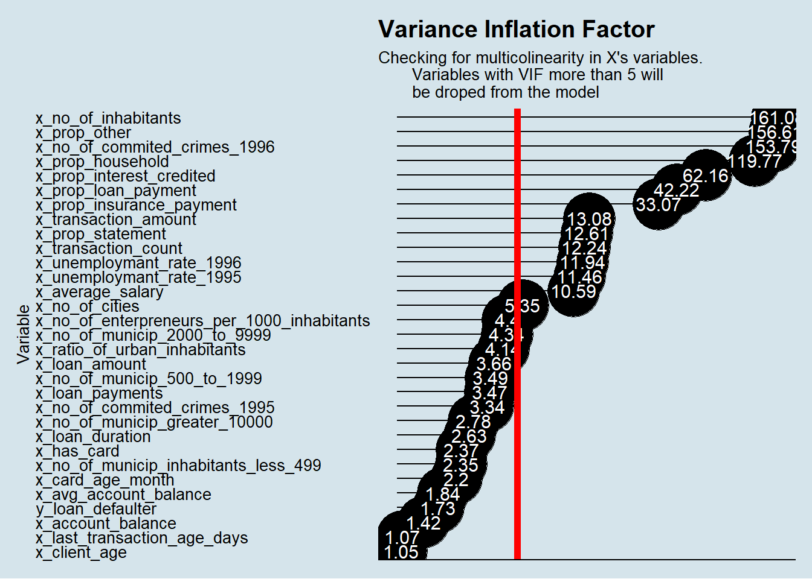
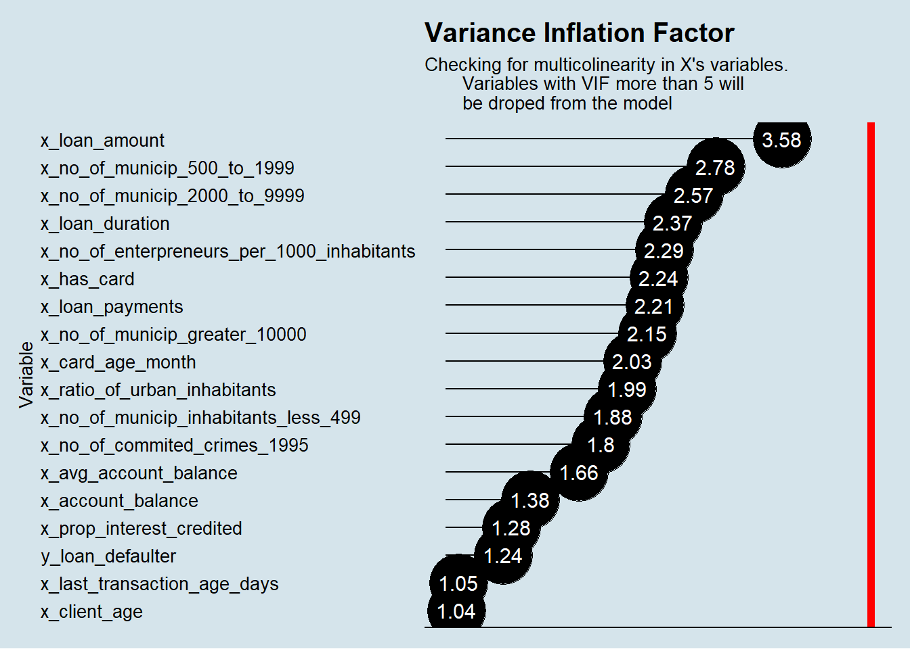
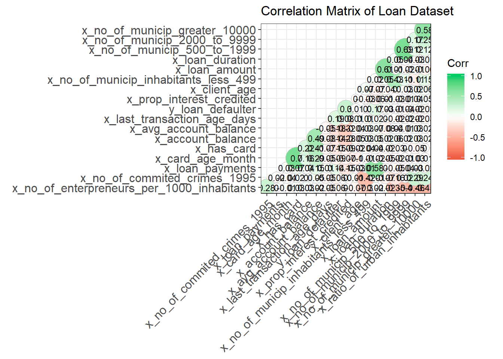
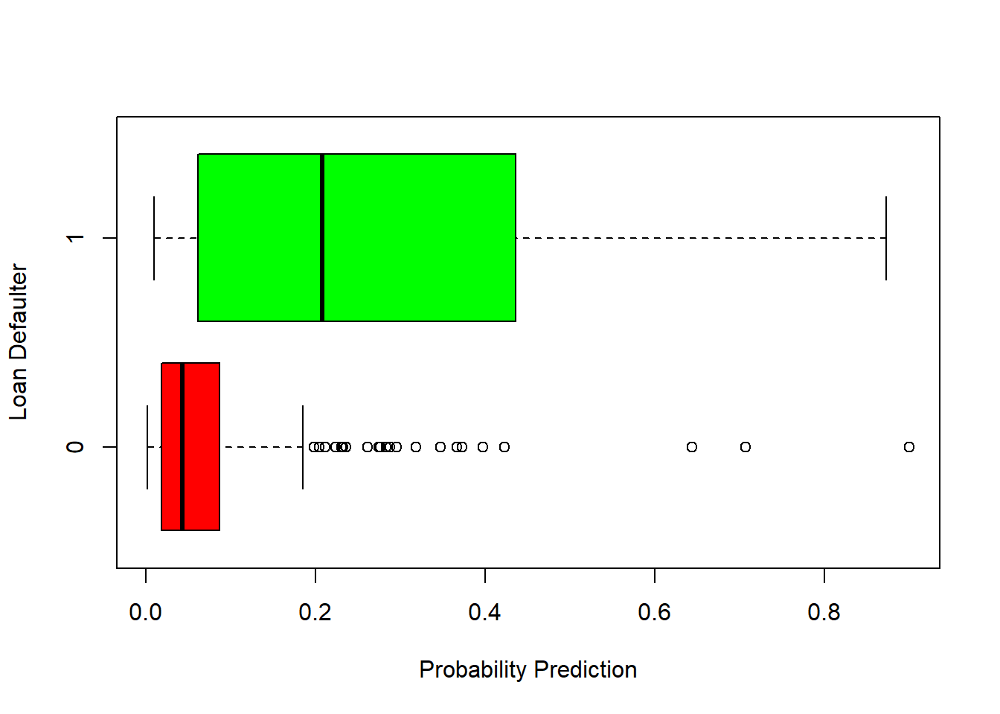
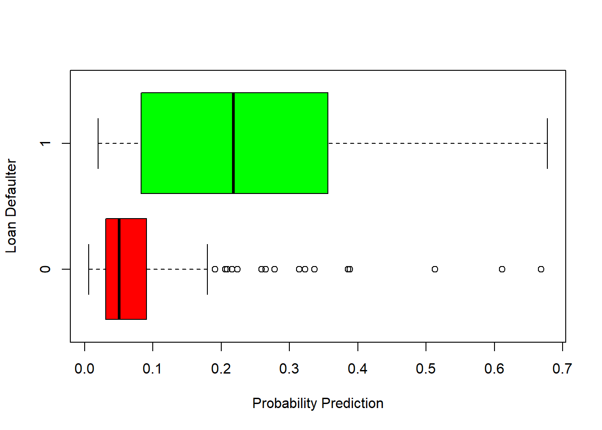
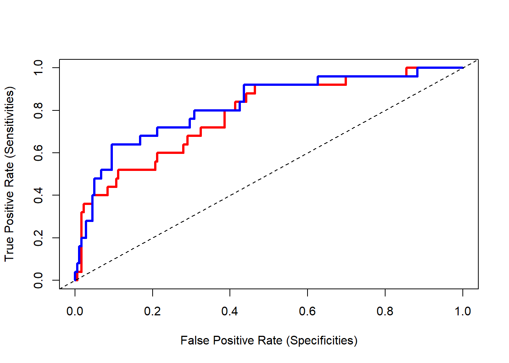

The goal of this report is trying to fit a logistic regression model on Loan data aiming to predict the probability of delinquency for each contract.
Using the vanilla transaction dataset, we calculated several derived variables for each account.
First, we calculated an additional table with the current account balance and average account balance of each account.
Later on, we calculated another auxiliary table that contains the proportion of each kind of transaction (k_symbol) for each account. The idea of these variable is to capture the spend pattern of each client.
Finally, we combine the 682 Loan Contracts observations with client, district, credit card and the auxiliary tables we calculated early.
We ended up having a data set with 39 variables.
| variables |
|---|
| y_loan_defaulter |
| x_loan_amount |
| x_loan_duration |
| x_loan_payments |
| x_loan_status |
| x_loan_contract_status |
| x_client_gender |
| x_client_age |
| x_district_name |
| x_region |
| x_no_of_inhabitants |
| x_no_of_municip_inhabitants_less_499 |
| x_no_of_municip_500_to_1999 |
| x_no_of_municip_2000_to_9999 |
| x_no_of_municip_greater_10000 |
| x_no_of_cities |
| x_ratio_of_urban_inhabitants |
| x_average_salary |
| x_unemploymant_rate_1995 |
| x_unemploymant_rate_1996 |
| x_no_of_enterpreneurs_per_1000_inhabitants |
| x_no_of_commited_crimes_1995 |
| x_no_of_commited_crimes_1996 |
| x_card_type |
| x_card_age_month |
| x_account_balance |
| x_avg_account_balance |
| x_transaction_count |
| x_transaction_amount |
| x_last_transaction_age_days |
| x_prop_old_age_pension |
| x_prop_insurance_payment |
| x_prop_sanction_interest |
| x_prop_household |
| x_prop_statement |
| x_prop_interest_credited |
| x_prop_loan_payment |
| x_prop_other |
| x_has_card |
From this dataset, we excluded 6 variables that are redundant, shows no variability on the 682 Loan contract observations or have no applicability for the exercise:
With the remaining variables we ran a multicollinearity test to identify additional variables to drop from the model specification.
vars.quant <- select_if(temp, is.numeric)
VIF <- imcdiag(vars.quant, temp$y_loan_defaulter)
VIF_Table_Before <- tibble(variable = names(VIF$idiags[,1]),
VIF = VIF$idiags[,1]) %>%
arrange(desc(VIF))
kable(VIF_Table_Before)| variable | VIF |
|---|---|
| x_no_of_inhabitants | 161.078688 |
| x_prop_other | 156.614374 |
| x_no_of_commited_crimes_1996 | 153.788642 |
| x_prop_household | 119.766648 |
| x_prop_interest_credited | 62.164451 |
| x_prop_loan_payment | 42.215533 |
| x_prop_insurance_payment | 33.065760 |
| x_transaction_amount | 13.077575 |
| x_prop_statement | 12.611010 |
| x_transaction_count | 12.243487 |
| x_unemploymant_rate_1996 | 11.942010 |
| x_unemploymant_rate_1995 | 11.457609 |
| x_average_salary | 10.592530 |
| x_no_of_cities | 5.348665 |
| x_no_of_enterpreneurs_per_1000_inhabitants | 4.398114 |
| x_no_of_municip_2000_to_9999 | 4.342691 |
| x_ratio_of_urban_inhabitants | 4.141633 |
| x_loan_amount | 3.656975 |
| x_no_of_municip_500_to_1999 | 3.494354 |
| x_loan_payments | 3.467355 |
| x_no_of_commited_crimes_1995 | 3.343160 |
| x_no_of_municip_greater_10000 | 2.784531 |
| x_loan_duration | 2.634738 |
| x_has_card | 2.365295 |
| x_no_of_municip_inhabitants_less_499 | 2.353720 |
| x_card_age_month | 2.200021 |
| x_avg_account_balance | 1.842499 |
| y_loan_defaulter | 1.728511 |
| x_account_balance | 1.422176 |
| x_last_transaction_age_days | 1.068578 |
| x_client_age | 1.053711 |

We decided to exclude any variable with a VIF greater than 5.
Below variables were excluded based on the multicollinear presence on them.
temp <- dplyr::select(temp, -c(x_prop_insurance_payment,
x_prop_household,
x_prop_statement,
x_prop_loan_payment,
x_prop_other,
x_no_of_inhabitants,
x_no_of_commited_crimes_1996,
x_transaction_amount,
x_transaction_count,
x_unemploymant_rate_1996,
x_unemploymant_rate_1995,
x_average_salary,
x_no_of_cities))
loan_reg_dataset <- tempHere is the final correlation matrix we got:
| variable | VIF |
|---|---|
| x_loan_amount | 3.576281 |
| x_no_of_municip_500_to_1999 | 2.781569 |
| x_no_of_municip_2000_to_9999 | 2.565167 |
| x_loan_duration | 2.366083 |
| x_no_of_enterpreneurs_per_1000_inhabitants | 2.289033 |
| x_has_card | 2.242915 |
| x_loan_payments | 2.208547 |
| x_no_of_municip_greater_10000 | 2.147182 |
| x_card_age_month | 2.028568 |
| x_ratio_of_urban_inhabitants | 1.986178 |
| x_no_of_municip_inhabitants_less_499 | 1.881482 |
| x_no_of_commited_crimes_1995 | 1.798576 |
| x_avg_account_balance | 1.656011 |
| x_account_balance | 1.378326 |
| x_prop_interest_credited | 1.280158 |
| y_loan_defaulter | 1.242373 |
| x_last_transaction_age_days | 1.048220 |
| x_client_age | 1.040390 |

The available data in Loan Dataset is split into Train and Testing data on the following proportion:
set.seed(12345)
index <- caret::createDataPartition(loan_reg_dataset$y_loan_defaulter,
p= 0.7,list = FALSE)
data.train <- loan_reg_dataset[index, ]
data.test <- loan_reg_dataset[-index,]
kable(prop.table(table(loan_reg_dataset$y_loan_defaulter)))| Var1 | Freq |
|---|---|
| 0 | 0.888563 |
| 1 | 0.111437 |
| Var1 | Freq |
|---|---|
| 0 | 0.8933054 |
| 1 | 0.1066946 |
| Var1 | Freq |
|---|---|
| 0 | 0.877451 |
| 1 | 0.122549 |
Both datasets keep the same proportion for the explained variable around 11%.
With the final cleaned dataset, we got from below steps we fit our Logistic Regression Y_loan_defaulter on all x variables.
model_1 <- glm(data = data.train, formula = y_loan_defaulter ~ .,
family= binomial(link='logit'))
summary(model_1)##
## Call:
## glm(formula = y_loan_defaulter ~ ., family = binomial(link = "logit"),
## data = data.train)
##
## Deviance Residuals:
## Min 1Q Median 3Q Max
## -1.5308 -0.4369 -0.2692 -0.1609 2.9273
##
## Coefficients: (1 not defined because of singularities)
## Estimate Std. Error z value
## (Intercept) -4.405e+00 2.351e+00 -1.874
## x_loan_amount 7.239e-06 2.978e-06 2.431
## x_loan_duration -2.860e-02 1.867e-02 -1.532
## x_loan_payments 2.306e-03 1.839e-03 1.254
## x_client_gendermale 2.084e-02 3.594e-01 0.058
## x_client_age 1.801e-02 1.414e-02 1.274
## x_no_of_municip_inhabitants_less_499 -1.823e-03 6.599e-03 -0.276
## x_no_of_municip_500_to_1999 8.119e-04 1.957e-02 0.041
## x_no_of_municip_2000_to_9999 -1.178e-02 6.436e-02 -0.183
## x_no_of_municip_greater_10000 -3.642e-01 2.321e-01 -1.569
## x_ratio_of_urban_inhabitants 9.512e-03 1.150e-02 0.827
## x_no_of_enterpreneurs_per_1000_inhabitants -1.078e-02 1.162e-02 -0.927
## x_no_of_commited_crimes_1995 -1.362e-02 9.617e-03 -1.416
## x_card_typegold 5.329e-01 1.315e+00 0.405
## x_card_typejunior 3.728e-01 1.311e+00 0.284
## x_card_typeno card 1.580e+00 8.938e-01 1.768
## x_card_age_month 2.938e-02 3.072e-02 0.956
## x_account_balance 2.386e-06 1.383e-06 1.725
## x_avg_account_balance -4.174e-06 2.969e-06 -1.406
## x_last_transaction_age_days 2.641e-02 4.276e-02 0.618
## x_prop_interest_credited 1.156e+01 2.241e+00 5.158
## x_has_card NA NA NA
## Pr(>|z|)
## (Intercept) 0.0610 .
## x_loan_amount 0.0151 *
## x_loan_duration 0.1255
## x_loan_payments 0.2099
## x_client_gendermale 0.9537
## x_client_age 0.2028
## x_no_of_municip_inhabitants_less_499 0.7824
## x_no_of_municip_500_to_1999 0.9669
## x_no_of_municip_2000_to_9999 0.8547
## x_no_of_municip_greater_10000 0.1167
## x_ratio_of_urban_inhabitants 0.4080
## x_no_of_enterpreneurs_per_1000_inhabitants 0.3538
## x_no_of_commited_crimes_1995 0.1566
## x_card_typegold 0.6852
## x_card_typejunior 0.7762
## x_card_typeno card 0.0770 .
## x_card_age_month 0.3390
## x_account_balance 0.0844 .
## x_avg_account_balance 0.1598
## x_last_transaction_age_days 0.5368
## x_prop_interest_credited 2.5e-07 ***
## x_has_card NA
## ---
## Signif. codes: 0 '***' 0.001 '**' 0.01 '*' 0.05 '.' 0.1 ' ' 1
##
## (Dispersion parameter for binomial family taken to be 1)
##
## Null deviance: 324.61 on 477 degrees of freedom
## Residual deviance: 246.59 on 457 degrees of freedom
## AIC: 288.59
##
## Number of Fisher Scoring iterations: 6Alternatively we fit a second model only with variables statistically significant p-value less than 10%.
model_2 <- glm(data = data.train, formula = y_loan_defaulter ~ x_loan_amount +
x_loan_duration + x_has_card + x_prop_interest_credited,
family= binomial(link='logit'))
summary(model_2)##
## Call:
## glm(formula = y_loan_defaulter ~ x_loan_amount + x_loan_duration +
## x_has_card + x_prop_interest_credited, family = binomial(link = "logit"),
## data = data.train)
##
## Deviance Residuals:
## Min 1Q Median 3Q Max
## -1.5790 -0.4375 -0.3290 -0.2165 2.6686
##
## Coefficients:
## Estimate Std. Error z value Pr(>|z|)
## (Intercept) -3.632e+00 4.984e-01 -7.286 3.19e-13 ***
## x_loan_amount 9.023e-06 1.888e-06 4.780 1.75e-06 ***
## x_loan_duration -3.864e-02 1.458e-02 -2.651 0.00803 **
## x_has_card -1.064e+00 5.009e-01 -2.124 0.03364 *
## x_prop_interest_credited 9.715e+00 1.750e+00 5.551 2.85e-08 ***
## ---
## Signif. codes: 0 '***' 0.001 '**' 0.01 '*' 0.05 '.' 0.1 ' ' 1
##
## (Dispersion parameter for binomial family taken to be 1)
##
## Null deviance: 324.61 on 477 degrees of freedom
## Residual deviance: 264.00 on 473 degrees of freedom
## AIC: 274
##
## Number of Fisher Scoring iterations: 6In the next step we will compare how each model performed.
We started this step by making predictions using our model on the X’s variables in our Train and Test datasets.
glm.prob.train.1 <- predict(model_1, type = "response")
glm.prob.test.1 <- predict(model_1, newdata = data.test, type= "response")## Warning in predict.lm(object, newdata, se.fit, scale = 1, type = if (type
## == : prediction from a rank-deficient fit may be misleadingglm.prob.train.2 <- predict(model_2, type = "response")
glm.prob.test.2 <- predict(model_2, newdata = data.test, type= "response")We then evaluate the metrics in the model for Train and Test data:
glm.train.1 <- HMeasure(data.train$y_loan_defaulter, glm.prob.train.1)
glm.test.1 <- HMeasure(data.test$y_loan_defaulter, glm.prob.test.1)
kable(glm.train.1$metrics)| H | Gini | AUC | AUCH | KS | MER | MWL | Spec.Sens95 | Sens.Spec95 | ER | Sens | Spec | Precision | Recall | TPR | FPR | F | Youden | TP | FP | TN | FN | |
|---|---|---|---|---|---|---|---|---|---|---|---|---|---|---|---|---|---|---|---|---|---|---|
| scores | 0.3782094 | 0.6830601 | 0.8415301 | 0.8567066 | 0.5430959 | 0.0962343 | 0.0870958 | 0.5035129 | 0.3921569 | 0.1025105 | 0.1764706 | 0.9836066 | 0.5625 | 0.1764706 | 0.1764706 | 0.0163934 | 0.2686567 | 0.1600771 | 9 | 7 | 420 | 42 |
| H | Gini | AUC | AUCH | KS | MER | MWL | Spec.Sens95 | Sens.Spec95 | ER | Sens | Spec | Precision | Recall | TPR | FPR | F | Youden | TP | FP | TN | FN | |
|---|---|---|---|---|---|---|---|---|---|---|---|---|---|---|---|---|---|---|---|---|---|---|
| scores | 0.3436917 | 0.5642458 | 0.7821229 | 0.8179888 | 0.4563128 | 0.0980392 | 0.1169262 | 0.301676 | 0.4 | 0.1176471 | 0.16 | 0.9832402 | 0.5714286 | 0.16 | 0.16 | 0.0167598 | 0.25 | 0.1432402 | 4 | 3 | 176 | 21 |
glm.train.2 <- HMeasure(data.train$y_loan_defaulter, glm.prob.train.2)
glm.test.2 <- HMeasure(data.test$y_loan_defaulter, glm.prob.test.2)
kable(glm.train.2$metrics)| H | Gini | AUC | AUCH | KS | MER | MWL | Spec.Sens95 | Sens.Spec95 | ER | Sens | Spec | Precision | Recall | TPR | FPR | F | Youden | TP | FP | TN | FN | |
|---|---|---|---|---|---|---|---|---|---|---|---|---|---|---|---|---|---|---|---|---|---|---|
| scores | 0.3259694 | 0.6040777 | 0.8020388 | 0.8227029 | 0.5100335 | 0.0941423 | 0.0933982 | 0.3161593 | 0.3333333 | 0.0983264 | 0.1568627 | 0.9906323 | 0.6666667 | 0.1568627 | 0.1568627 | 0.0093677 | 0.2539683 | 0.1474951 | 8 | 4 | 423 | 43 |
| H | Gini | AUC | AUCH | KS | MER | MWL | Spec.Sens95 | Sens.Spec95 | ER | Sens | Spec | Precision | Recall | TPR | FPR | F | Youden | TP | FP | TN | FN | |
|---|---|---|---|---|---|---|---|---|---|---|---|---|---|---|---|---|---|---|---|---|---|---|
| scores | 0.426706 | 0.6420112 | 0.8210056 | 0.8521788 | 0.5450279 | 0.1078431 | 0.097847 | 0.3743017 | 0.4 | 0.1176471 | 0.16 | 0.9832402 | 0.5714286 | 0.16 | 0.16 | 0.0167598 | 0.25 | 0.1432402 | 4 | 3 | 176 | 21 |
Then, we look a boxplot chart to see how well our model split the observation into our explained variable:
-Model 1: 
-Model 2: 
Then we plot the ROC(Receiver Operator Characteristic Curve) of the model:
## Setting levels: control = 0, case = 1## Setting direction: controls < cases## Setting levels: control = 0, case = 1## Setting direction: controls < cases
Finally we look at the general model accuracy:
-Model 1:
fitted.results.1 <- ifelse(glm.prob.test.1 > 0.5,1,0)
misClasificError <- mean(fitted.results.1 != data.test$y_loan_defaulter)
print(paste('General Accuracy: ', round(((1 - misClasificError) * 100),2), '%'))## [1] "General Accuracy: 88.24 %"-Model 2:
fitted.results.2 <- ifelse(glm.prob.test.2 > 0.5,1,0)
misClasificError <- mean(fitted.results.2 != data.test$y_loan_defaulter)
print(paste('General Accuracy: ', round(((1 - misClasificError) * 100),2), '%'))## [1] "General Accuracy: 88.24 %"